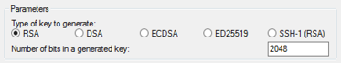
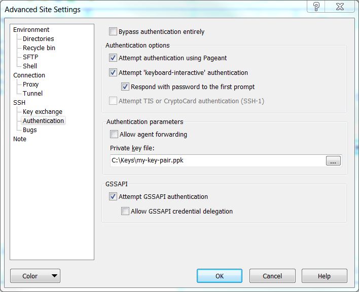
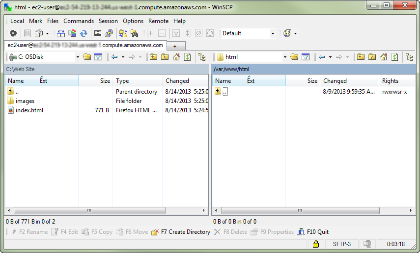
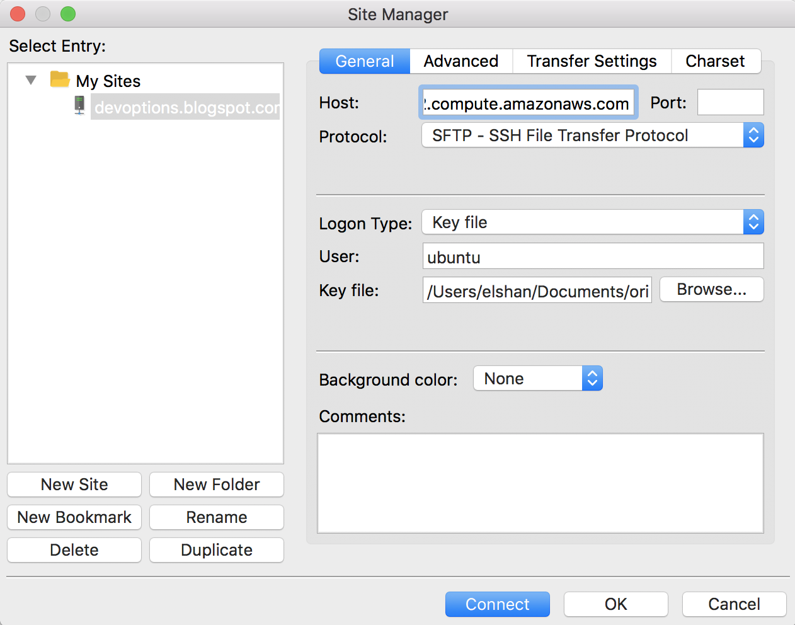

Amazon Elastic Compute Cloud (EC2) Instances¶
What is Amazon EC2?¶
Amazon Elastic Compute Cloud (Amazon EC2) provides scalable computing capacity in the Amazon Web Services (AWS) cloud. Using Amazon EC2 eliminates your need to invest in hardware up front, so you can develop and deploy applications faster. You can use Amazon EC2 to launch as many or as few virtual servers as you need, configure security and networking, and manage storage. Amazon EC2 enables you to scale up or down to handle changes in requirements or spikes in popularity, reducing your need to forecast traffic.
If you would like to know more about Cloud Computing from AWS point of view, see What is Cloud Computing?
How to get started with Amazon EC2¶
First, you need to get set up to use Amazon EC2. After you are set up, you are ready to complete the Getting Started tutorial for Amazon EC2. Whenever you need more information about an Amazon EC2 feature, you can read the technical documentation.
You need to get familiar with the follwoing:
Setting up with Amazon EC2¶
Complete the tasks in this section to get set up for launching an Amazon EC2 instance for the first time:
Sign up for AWS¶
Please follow the instructions in Setting Up an AWS Account.
Create a key pair¶
AWS uses public-key cryptography to secure the login information for your instance. A Linux instance has no password; you use a key pair to log in to your instance securely. You specify the name of the key pair when you launch your instance, then provide the private key when you log in using SSH.
If you haven’t created a key pair already, you can create one using the Amazon EC2 console. Note that if you plan to launch instances in multiple Regions, you’ll need to create a key pair in each Region. For more information about Regions, see Regions, Availability Zones, and Local Zones.
You can create a key pair using one of the following method:
-
Open the Amazon EC2 console at https://console.aws.amazon.com/ec2/.
-
In the navigation pane, choose Key Pairs.
-
Choose Create key pair.
-
For Name, enter a descriptive name for the key pair. Amazon EC2 associates the public key with the name that you specify as the key name. A key name can include up to 255 ASCII characters. It can’t include leading or trailing spaces.
-
For File format, choose the format in which to save the private key. To save the private key in a format that can be used with OpenSSH, choose pem. To save the private key in a format that can be used with PuTTY, choose ppk.
-
Choose Create key pair.
-
The private key file is automatically downloaded by your browser. The base file name is the name you specified as the name of your key pair, and the file name extension is determined by the file format you chose. Save the private key file in a safe place.
/!\ Important This is the only chance for you to save the private key file. -
If you will use an SSH client on a macOS or Linux computer to connect to your Linux instance, use the following command to set the permissions of your private key file so that only you can read it.
chmod 400 my-key-pair.pem
If you do not set these permissions, then you cannot connect to your instance using this key pair. For more information, see Error: Unprotected private key file.
Watch it here¶
Create a security group¶
Security groups act as a firewall for associated instances, controlling both inbound and outbound traffic at the instance level. You must add rules to a security group that enable you to connect to your instance from your IP address using SSH. You can also add rules that allow inbound and outbound HTTP and HTTPS access from anywhere.
Note that if you plan to launch instances in multiple Regions, you’ll need to create a security group in each Region. For more information about Regions, see Regions, Availability Zones, and Local Zones.
Prerequisites¶
You’ll need the public IPv4 address of your local computer. The security group editor in the Amazon EC2 console can automatically detect the public IPv4 address for you. Alternatively, you can use the search phrase “what is my IP address” in an Internet browser, or use the following service: Check IP.
If you are connecting through an Internet service provider (ISP) or from behind a firewall without a static IP address, you need to find out the range of IP addresses used by client computers.
To create a security group with least privilege
-
Open the Amazon EC2 console at https://console.aws.amazon.com/ec2/.
-
From the navigation bar, select a Region for the security group. Security groups are specific to a Region, so you should select the same Region in which you created your key pair.
-
In the navigation pane, choose Security Groups.
-
Choose Create security group.
-
In the Basic details section, do the following:
a. Enter a name for the new security group and a description. Use a name that is easy for you to remember, such as your user name, followed by SG, plus the Region name. For example, me_SG_uswest2.
b. In the VPC list, select your default VPC for the Region.
-
In the Inbound rules section, create the following rules (choose Add rule for each new rule):
-
Choose HTTP from the Type list, and make sure that Source is set to Anywhere (
0.0.0.0/0). -
Choose HTTPS from the Type list, and make sure that Source is set to Anywhere (
0.0.0.0/0). -
Choose SSH from the Type list. In the Source box, choose My IP to automatically populate the field with the public IPv4 address of your local computer. Alternatively, choose Custom and specify the public IPv4 address of your computer or network in CIDR notation. To specify an individual IP address in CIDR notation, add the routing suffix
/32, for example,203.0.113.25/32. If your company allocates addresses from a range, specify the entire range, such as203.0.113.0/24./!\ Warning For security reasons, we don't recommend that you allow SSH access from all IPv4 addresses (0.0.0.0/0) to your instance, except for testing purposes and only for a short time.
-
-
Choose Create security group.
For more information, see Amazon EC2 security groups for Linux instances.
Getting started with Amazon EC2 Linux instances¶
When you sign up for AWS, you can get started with Amazon EC2 using the AWS Free Tier. If you created your AWS account less than 12 months ago, and have not already exceeded the free tier benefits for Amazon EC2, it will not cost you anything to complete this tutorial, because we help you select options that are within the free tier benefits. Otherwise, you’ll incur the standard Amazon EC2 usage fees from the time that you launch the instance until you terminate the instance (which is the final task of this tutorial), even if it remains idle.
The instance is an Amazon EBS-backed instance (meaning that the root volume is an EBS (Elastic Block Store) volume). You can either specify the Availability Zone in which your instance runs, or let Amazon EC2 select an Availability Zone for you. When you launch your instance, you secure it by specifying a key pair and security group. When you connect to your instance, you must specify the private key of the key pair that you specified when launching your instance.

In ordere to implement the previous configuration, you should proceeed with the following:
- Launch an instance
- Connect to your instance
- Clean up your instance
- Terminate your instance
- Next Steps
Launch an instance¶
You can launch a Linux instance using the AWS Management Console as described in the following procedure. This tutorial is intended to help you launch your first instance quickly, so it doesn’t cover all possible options. For more information about the advanced options, see Launching an Instance.
To launch an instance
-
Open the Amazon EC2 console at https://console.aws.amazon.com/ec2/.
-
From the console dashboard, choose Launch Instance.
-
The Choose an Amazon Machine Image (AMI) page displays a list of basic configurations, called Amazon Machine Images (AMIs), that serve as templates for your instance. Select an HVM version of Amazon Linux 2. Notice that these AMIs are marked “Free tier eligible.”
-
On the Choose an Instance Type page, you can select the hardware configuration of your instance. Select the
t2.microinstance type, which is selected by default. Thet2.microinstance type is eligible for the free tier. In Regions wheret2.microis unavailable, you can use at3.microinstance under the free tier. For more information, see AWS Free Tier. -
Choose Review and Launch to let the wizard complete the other configuration settings for you.
-
On the Review Instance Launch page, under Security Groups, you’ll see that the wizard created and selected a security group for you. You can use this security group, or alternatively you can select the security group that you created when getting set up using the following steps:
a. Choose Edit security groups.
b. On the Configure Security Group page, ensure that Select an existing security group is selected.
c. Select your security group from the list of existing security groups, and then choose Review and Launch.
-
On the Review Instance Launch page, choose Launch.
-
When prompted for a key pair, select Choose an existing key pair, then select the key pair that you created when getting set up.
/!\ Warning Don't select 'Proceed without a key pair'. If you launch your instance without a key pair, then you 'cannot' connect to it.When you are ready, select the acknowledgement check box, and then choose Launch Instances.
-
A confirmation page lets you know that your instance is launching. Choose View Instances to close the confirmation page and return to the console.
-
On the Instances screen, you can view the status of the launch. It takes a short time for an instance to launch. When you launch an instance, its initial state is
pending. After the instance starts, its state changes to running and it receives a public DNS name. (If the Public DNS (IPv4) column is hidden, choose Show/Hide Columns (the gear-shaped icon) in the top right corner of the page and then select Public DNS (IPv4).) -
It can take a few minutes for the instance to be ready so that you can connect to it. Check that your instance has passed its status checks; you can view this information in the Status Checks column.
Connect to your instance¶
There are several ways to connect to your Linux instance. For more information, see Connect to your Linux instance.
/!\ Important
You can’t connect to your instance unless you launched it with a key pair for which you have the .pem
file and you launched it with a security group that allows SSH access from your computer.
If you can’t connect to your instance, see Troubleshooting connecting to your instance for assistance.
Clean up your instance¶
After you’ve finished with the instance that you created for this tutorial, you should clean up by terminating the instance. If you want to do more with this instance before you clean up, see Next steps.
/!\ Important
Terminating an instance effectively deletes it; you can’t reconnect to an instance after you’ve terminated it.
Terminate your instance¶
If you launched an instance that is not within the AWS Free Tier, you’ll stop incurring charges for that instance as soon as the instance status changes to shutting down or terminated. If you’d like to keep your instance for later, but not incur charges, you can stop the instance now and then start it again later. For more information, see Stopping Instances.
To terminate your instance
-
In the navigation pane, choose Instances. In the list of instances, select the instance.
-
Choose Actions, Instance State, Terminate.
-
Choose Yes, Terminate when prompted for confirmation.
Amazon EC2 shuts down and terminates your instance. After your instance is terminated, it remains visible on the console for a short while, and then the entry is deleted.
Next Steps¶
After you start your instance, you might want to try some of the following exercises:
-
Learn how to remotely manage your EC2 instance using Run Command. For more information, see AWS Systems Manager Run Command in the AWS Systems Manager User Guide.
-
Configure a CloudWatch alarm to notify you if your usage exceeds the Free Tier. For more information, see Create a Billing Alarm in the AWS Billing and Cost Management User Guide.
Watch it here¶
Connecting to your Linux EC2 Instances¶
Connect to the Linux instances that you launched and transfer files between your local computer and your instance.
The operating system of your local computer determines the options that you have to connect from your local computer to your Linux instance.
Connection options¶
If your local computer operating system is Linux or macOS X, you can connect by using one pf the following:
If your local computer operating system is Windows, you can connect by using one pf the following:
Connecting to your Linux instance using SSH¶
After you launch your instance, you can connect to it and use it the way that you’d use a computer sitting in front of you.
Prerequisites¶
Before you connect to your Linux instance, complete the following prerequisites.
- Verify that the instance is ready After you launch an instance, it can take a few minutes for the instance to be ready so that you can connect to it. Check that your instance has passed its status checks. You can view this information in the Status Checks column on the Instances page.
- Verify the general prerequisites for connecting to your instance Check the General prerequisites for connecting to your instance.
-
Install an SSH client on your local computer (either Linux or Windows) as needed Your local computer might have an SSH client installed by default. You can verify this by typing
sshat the command line. If your compute doesn’t recognize the command, you can install an SSH client.- Recent versions of Windows Server 2019 and Windows 10 - OpenSSH is included as an installable component. For information, see OpenSSH in Windows.
- Earlier versions of Windows - Download and install OpenSSH. For more information, see Win32-OpenSSH.
- Linux and macOS X - Download and install OpenSSH. For more information, see Linux-openssh.
Connect to your Linux instance using an SSH client¶
Use the following procedure to connect to your Linux instance using an SSH client. If you receive an error while attempting to connect to your instance, see Troubleshooting connecting to your instance.
To connect to your instance using SSH
-
In a terminal window, use the ssh command to connect to the instance. You specify the path and file name of the private key (
.pem), the user name for your instance, and the public DNS name or IPv6 address for your instance. For more information about how to find the private key, the user name for your instance, and the DNS name or IPv6 address for an instance, see Locate the private key and Get information about your instance. To connect to your instance, use one of the following commands.a. (Public DNS) To connect using your instance’s public DNS name, enter the following command.
ssh -i /path/my-key-pair.pem my-instance-user-name@my-instance-public-dns-nameb. (IPv6) Alternatively, if your instance has an IPv6 address, to connect using your instance’s IPv6 address, enter the following command.
ssh -i /path/my-key-pair.pem my-instance-user-name@my-instance-IPv6-addressYou see a response like the following:
The authenticity of host 'ec2-198-51-100-1.compute-1.amazonaws.com (198-51-100-1)' can't be established. ECDSA key fingerprint is l4UB/neBad9tvkgJf1QZWxheQmR59WgrgzEimCG6kZY. Are you sure you want to continue connecting (yes/no)? -
Enter yes.
You see a response like the following:
Warning: Permanently added 'ec2-198-51-100-1.compute-1.amazonaws.com' (ECDSA) to the list of known hosts.
Connecting to your Linux instance from Windows using PuTTY or MobaXterm¶
After you launch your instance, you can connect to it and use it the way that you’d use a computer sitting in front of you.
The following instructions explain how to connect to your instance using PuTTY, and MobaXterm, free SSH client for Windows. If you receive an error while attempting to connect to your instance, see General prerequisites for connecting to your instance.
Prerequisites¶
Before you connect to your Linux instance using PuTTY, complete the following prerequisites.
-
Verify that the instance is ready After you launch an instance, it can take a few minutes for the instance to be ready so that you can connect to it. Check that your instance has passed its status checks. You can view this information in the Status Checks column on the Instances page.
-
Verify the general prerequisites for connecting to your instance Check the General prerequisites for connecting to your instance.
-
Install PuTTY on your local computer Download and install PuTTY from the PuTTY download page. If you already have an older version of PuTTY installed, we recommend that you download the latest version. Be sure to install the entire suite.
-
Or Install MobaXterm on your local computer Download and install MobaXterm from the MobaXterm download page.
-
Convert your private key using PuTTYgen In case you do not have a
.ppk, locate the private key (.pemfile) for the key pair that you specified when you launched the instance. Convert the.pemfile to a.ppkfile for use with PuTTY. For more information, follow the steps in the next subsection.
Convert your private key using PuTTYgen¶
PuTTY does not natively support the private key format for SSH keys. PuTTY provides a tool named PuTTYgen, which converts keys to the required format for PuTTY. You must convert your private key (.pem file) into this format (.ppk file) as follows in order to connect to your instance using PuTTY.
To convert your private key
-
From the Start menu, choose All Programs, PuTTY, PuTTYgen.
-
Under Type of key to generate, choose RSA. If you’re using an older version of PuTTYgen, choose SSH-2 RSA.

-
Choose Load. By default, PuTTYgen displays only files with the extension
.ppk. To locate your.pemfile, choose the option to display files of all types. Select all file types
-
Select your
.pemfile for the key pair that you specified when you launched your instance and choose Open. PuTTYgen displays a notice that the.pemfile was successfully imported. Choose OK. -
To save the key in the format that PuTTY can use, choose Save private key. PuTTYgen displays a warning about saving the key without a passphrase. Choose Yes.
/!\ Note A passphrase on a private key is an extra layer of protection. Even if your private key is discovered, it can't be used without the passphrase. The downside to using a passphrase is that it makes automation harder because human intervention is needed to log on to an instance, or to copy files to an instance. -
Specify the same name for the key that you used for the key pair (for example,
my-key-pair) and choose Save. PuTTY automatically adds the.ppkfile extension.
Your private key is now in the correct format for use with PuTTY. You can now connect to your instance using PuTTY’s SSH client.
Connecting to your Linux instance¶
Use the following procedure to connect to your Linux instance using PuTTY. You need the .ppk file that you created for your private key. For more information, see Convert your private key using PuTTYgen in the preceding section. If you receive an error while attempting to connect to your instance, see Troubleshooting Connecting to Your Instance.
To connect to your instance using PuTTY
-
Start PuTTY (from the Start menu, choose All Programs, PuTTY, PuTTY).
-
In the Category pane, choose Session and complete the following fields:
a. In the Host Name box, do one of the following:
-
(Public DNS) To connect using your instance’s public DNS name, enter
my-instance-user-name@my-instance-public-dns-name. -
(IPv6) Alternatively, if your instance has an IPv6 address, to connect using your instance’s IPv6 address, enter
my-instance-user-name@my-instance-IPv6-address.
For information about how to get the user name for your instance, and the public DNS name or IPv6 address of your instance, see Get information about your instance.
b. Ensure that the Port value is 22.
c. Under Connection type, select SSH.

-
-
(Optional) You can configure PuTTY to automatically send ‘keepalive’ data at regular intervals to keep the session active. This is useful to avoid disconnecting from your instance due to session inactivity. In the Category pane, choose Connection, and then enter the required interval in the Seconds between keepalives field. For example, if your session disconnects after 10 minutes of inactivity, enter 180 to configure PuTTY to send keepalive data every 3 minutes.
-
In the Category pane, expand Connection, expand SSH, and then choose Auth. Complete the following:
a. Choose Browse.
b. Select the
.ppkfile that you generated for your key pair and choose Open.c. (Optional) If you plan to start this session again later, you can save the session information for future use. Under Category, choose Session, enter a name for the session in Saved Sessions, and then choose Save.
d. Choose Open.
-
If this is the first time you have connected to this instance, PuTTY displays a security alert dialog box that asks whether you trust the host to which you are connecting.
a. Choose Yes. A window opens and you are connected to your instance. /!\ Note If you specified a passphrase when you converted your private key to PuTTY’s format, you must provide that passphrase when you log in to the instance.
If you receive an error while attempting to connect to your instance, see Troubleshooting Connecting to Your Instance.
Transferring files to Linux instances¶
Transferring files to your Linux instances depends on the type of the operating system you use to connect to the instance. Therfore:
-
If you connect through Linux
Two ways to transfer files between your local computer and a Linux instance are to use:
-
If you connect through Windwos
Many options are exist to transfer files between the instances and local machines, such as:
Transferring files to Linux instances from Linux using SCP¶
One way to transfer files between your local computer and a Linux instance is to use the secure copy protocol (SCP). This section describes how to transfer files with SCP. The procedure is similar to the procedure for connecting to an instance with SSH.
Prerequisites¶
- Verify the general prerequisites for transferring files to your instance.
The general prerequisites for transferring files to an instance are the same as the general prerequisites for connecting to an instance. For more information, see General prerequisites for connecting to your instance.
- Install an SCP client
Most Linux, Unix, and Apple computers include an SCP client by default. If yours doesn’t, the OpenSSH project provides a free implementation of the full suite of SSH tools, including an SCP client. For more information, see http://www.openssh.org.
Use SCP to transfer a file¶
-
Transfer a file to your instance using the instance’s public DNS name, or the IPv6 address if your instance has one. For example, if the name of your private key file is
my-key-pair, the file to transfer isSampleFile.txt, the user name for your instance ismy-instance-user-name, and the public DNS name of the instance ismy-instance-public-dns-name, ormy-instance-IPv6-addressif your instance has an IPv6 address, use one of the following commands to copy the file to themy-instance-user-namehome directory.-
(Public DNS) To transfer a file to your instance using your instance’s public DNS name, enter the following command.
scp -i /path/my-key-pair.pem /path/SampleFile.txt my-instance-user-name@my-instance-public-dns-name:~ -
(IPv6) Alternatively, if your instance has an IPv6 address, to transfer a file using the instance’s IPv6 address, enter the following command. The IPv6 address must be enclosed in square brackets ([ ]), which must be escaped ().
scp -i /path/my-key-pair.pem /path/SampleFile.txt my-instance-user-name@\[my-instance-IPv6-address\]:~
-
You see a response like the following:
The authenticity of host 'ec2-198-51-100-1.compute-1.amazonaws.com (10.254.142.33)'
can't be established.
RSA key fingerprint is 1f:51:ae:28:bf:89:e9:d8:1f:25:5d:37:2d:7d:b8:ca:9f:f5:f1:6f.
Are you sure you want to continue connecting (yes/no)?
- Enter
yes
You see a response like the following:
Warning: Permanently added 'ec2-198-51-100-1.compute-1.amazonaws.com' (RSA)
to the list of known hosts.
Sending file modes: C0644 20 SampleFile.txt
Sink: C0644 20 SampleFile.txt
SampleFile.txt 100% 20 0.0KB/s 00:00
If you receive a “bash: scp: command not found” error, you must first install scp on your Linux instance. For some operating systems, this is located in the openssh-clients package. For Amazon Linux variants, such as the Amazon ECS-optimized AMI, use the following command to install scp:
[ec2-user ~]$ sudo yum install -y openssh-clients
-
To transfer files in the other direction (from your Amazon EC2 instance to your local computer), reverse the order of the host parameters. For example, to transfer the
SampleFile.txtfile from your EC2 instance back to the home directory on your local computer asSampleFile2.txt, use of the following commands on your local computer.-
(Public DNS) To transfer a file to your instance using your instance’s public DNS name, enter the following command.
scp -i /path/my-key-pair.pem my-instance-user-name@my-instance-public-dns-name:~/SampleFile.txt ~/SampleFile2.txt -
(IPv6) Alternatively, if your instance has an IPv6 address, to transfer a file using the instance’s IPv6 address, enter the following command. The IPv6 address must be enclosed in square brackets ([ ]), which must be escaped ().
scp -i /path/my-key-pair.pem my-instance-user-name@\[my-instance-IPv6-address\]:~/SampleFile.txt ~/SampleFile2.txt
-
Transferring files to your Linux instance using the PuTTY Secure Copy client¶
The PuTTY Secure Copy client (PSCP) is a command line tool that you can use to transfer files between your Windows computer and your Linux instance. If you prefer a graphical user interface (GUI), you can use an open source GUI tool named WinSCP. For more information, see Transferring files to your Linux instance using WinSCP or FileZilla.
To use PSCP, you need the private key you generated in Convert your private key using PuTTYgen. You also need the public DNS name of your Linux instance, or the IPv6 address if your instance has one.
The following example transfers the file Sample_file.txt from the C:\ drive on a Windows computer to the my-instance-user-name home directory on an Amazon Linux instance. To transfer a file, use one of the following commands.
-
(Public DNS) To transfer a file using your instance’s public DNS name, enter the following command.
pscp -i C:\path\my-key-pair.ppk C:\path\Sample_file.txt my-instance-user-name@my-instance-public-dns-name:/home/my-instance-user-name/Sample_file.txt -
(IPv6) Alternatively, if your instance has an IPv6 address, to transfer a file using your instance’s IPv6 address, enter the following command. The IPv6 address must be enclosed in square brackets ([ ]).
pscp -i C:\path\my-key-pair.ppk C:\path\Sample_file.txt my-instance-user-name@[my-instance-IPv6-address]:/home/my-instance-user-name/Sample_file.txt
Transferring files to your Linux instance using WinSCP¶
WinSCP is a GUI-based file manager for Windows that allows you to upload and transfer files to a remote computer using the SFTP, SCP, FTP, and FTPS protocols. WinSCP allows you to drag and drop files from your Windows computer to your Linux instance or synchronize entire directory structures between the two systems.
To use WinSCP, you need the private key that you generated in Convert your private key using PuTTYgen. You also need the public DNS name of your Linux instance.
Prerequisites¶
-
Download and install WinSCP from http://winscp.net/eng/download.php. For most users, the default installation options are OK.
-
Start WinSCP.
Configuration¶
-
At the WinSCP login screen, for Host name, enter one of the following:
-
(Public DNS or IPv4 address) To log in using your instance’s public DNS name or public IPv4 address, enter the public DNS name or public IPv4 address for your instance.
-
(IPv6) Alternatively, if your instance has an IPv6 address, to log in using your instance’s IPv6 address, enter the IPv6 address for your instance.
-
-
For User name, enter the default user name for your AMI.
-
For Amazon Linux 2 or the Amazon Linux AMI, the user name is
ec2-user. -
For a CentOS AMI, the user name is
centos. -
For a Debian AMI, the user name is
admin. -
For a Fedora AMI, the user name is
ec2-userorfedora. -
For a RHEL AMI, the user name is
ec2-userorroot. -
For a SUSE AMI, the user name is
ec2-userorroot. -
For an Ubuntu AMI, the user name is
ubuntu. -
Otherwise, if
ec2-userandrootdon’t work, check with the AMI provider.
-
-
Specify the private key for your instance. For Private key, enter the path to your private key, or choose the “…” button to browse for the file. To open the advanced site settings, for newer versions of WinSCP, choose Advanced. To find the Private key file setting, under SSH, choose Authentication.
Here is a screenshot from WinSCP version 5.9.4:

WinSCP requires a PuTTY private key file (.ppk). You can convert a .pem security key file to the .ppk format using PuTTYgen. For more information, see (Convert your private key using PuTTYgen)[#convert-your-private-key-using-puttygen].
Connect and start transfering files¶
- Choose Login. To add the host fingerprint to the host cache, choose Yes.

- After the connection is established, in the connection window your Linux instance is on the right and your local machine is on the left. You can drag and drop files directly into the remote file system from your local machine. For more information on WinSCP, see the project documentation at http://winscp.net/eng/docs/start.
If you receive a “Cannot execute SCP to start transfer” error, you must first install scp on your Linux instance. For some operating systems, this is located in the openssh-clients package. For Amazon Linux variants, such as the Amazon ECS-optimized AMI, use the following command to install scp.
[ec2-user ~]$ sudo yum install -y openssh-clients
Watch it here¶
Transferring files to your Linux instance using FileZilla¶
FileZilla is a free software, cross-platform FTP application, consisting of FileZilla Client and FileZilla Server. Client binaries are available for Windows, Linux, and macOS, server binaries are available for Windows only. Both server and client support FTP and FTPS (FTP over SSL/TLS), while the client can in addition connect to SFTP servers.
To use FileZilla, you need the private key that you generated in Convert your private key using PuTTYgen. You also need the public DNS name of your Linux instance.
Prerequisites¶
-
Download and install FileZilla from https://filezilla-project.org/download.php for Windows or Linux (Choose your flavor). For most users, the default installation options are OK.
-
Start FileZilla.
Configuration¶
-
Edit (Preferences) > Settings > Connection > SFTP, Click Add key file
-
Browse to the location of your
.pemfile and select it. -
A message box will appear asking your permission to convert the file into
.ppkformat. Click Yes, then give the file a name and store it somewhere.- If you already convert the key by PuTTYgen, just browse the
.ppkinstead.
- If you already convert the key by PuTTYgen, just browse the
-
If the new file is shown in the list of Keyfiles, then continue to the next step. If not, then click Add keyfile… and select the converted file.
-
From File menu choose Site Manager, and choose Add a new site
-
At the FileZilla Site Manager screen, for Host name, enter one of the following:
-
(Public DNS or IPv4 address) To log in using your instance’s public DNS name or public IPv4 address, enter the public DNS name or public IPv4 address for your instance.
-
(IPv6) Alternatively, if your instance has an IPv6 address, to log in using your instance’s IPv6 address, enter the IPv6 address for your instance.
-
-
For the Protocol choose SFTP
-
For the Login Type choose Normal
-
For User name, enter the default user name for your AMI.
-
For Amazon Linux 2 or the Amazon Linux AMI, the user name is
ec2-user. -
For a CentOS AMI, the user name is
centos. -
For a Debian AMI, the user name is
admin. -
For a Fedora AMI, the user name is
ec2-userorfedora. -
For a RHEL AMI, the user name is
ec2-userorroot. -
For a SUSE AMI, the user name is
ec2-userorroot. -
For an Ubuntu AMI, the user name is
ubuntu. -
Otherwise, if
ec2-userandrootdon’t work, check with the AMI provider.
-
Here is a screenshot from FileZilla version 3.49.1:

Connect and start transfering files¶
-
Choose Connect. To add the host fingerprint to the Site Manager.
-
After the connection is established, in the connection window your Linux instance is on the right and your local machine is on the left. You can drag and drop files directly into the remote file system from your local machine. For more information on FileZilla, see the project documentation at https://wiki.filezilla-project.org/Documentation.

If you receive a “Cannot execute SCP to start transfer” error, you must first install scp on your Linux instance. For some operating systems, this is located in the openssh-clients package. For Amazon Linux variants, such as the Amazon ECS-optimized AMI, use the following command to install scp.
[ec2-user ~]$ sudo yum install -y openssh-clients
Watch it here¶
Getting started with Amazon EC2 Windows Instances¶
To get started with a Windows instance, see Getting started with Amazon EC2 Windows instances.
Connecting to your Windows instance¶
To connect to a Windows instance, see Connecting to Your Windows Instance in the Amazon EC2 User Guide for Windows Instances.
Transfer files to Windows instances¶
To transfer files to and from a Windows instance, see Transfer files to Windows instances in the Amazon EC2 User Guide for Windows Instances.